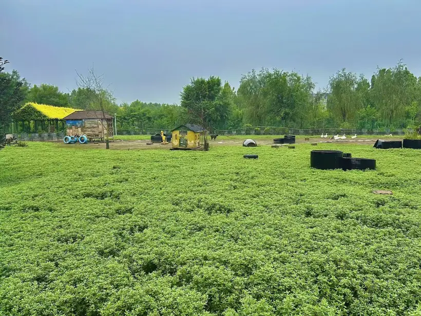

点位介绍
欢迎来到萌宠乐园。
园区内饲养了多种性情温顺的萌宠，在工作人员的引导下，您可以观察动物习性、在专属区域投喂饲料、打卡合影，近距离认识不同小动物的特点。这里既是小朋友亲近自然、培养爱心的户外自然课堂，也是大家放松身心、感受治愈野趣的好去处。
园区执行标准化饲养管理，配套日常防疫、定期体检与科学投喂机制，全程保障动物健康与园区环境卫生。
温馨提示：请在指定区域内互动，勿私自投喂自带食物、惊吓动物；儿童游玩须由成人全程陪同。

园区语音导览
▶语音讲解
欢迎来到萌宠乐园。
园区内饲养了多种性情温顺的萌宠，在工作人员的引导下，您可以观察动物习性、在专属区域投喂饲料、打卡合影，近距离认识不同小动物的特点。这里既是小朋友亲近自然、培养爱心的户外自然课堂，也是大家放松身心、感受治愈野趣的好去处。
园区执行标准化饲养管理，配套日常防疫、定期体检与科学投喂机制，全程保障动物健康与园区环境卫生。
温馨提示：请在指定区域内互动，勿私自投喂自带食物、惊吓动物；儿童游玩须由成人全程陪同。